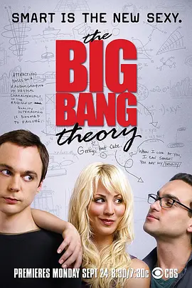
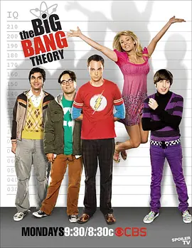
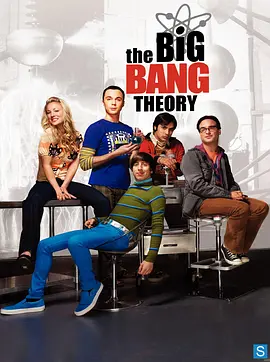
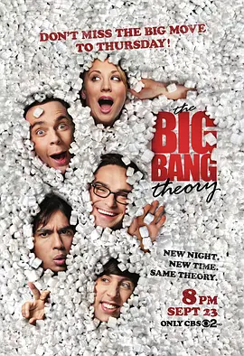
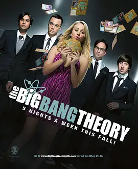

《生活大爆炸》第一季
Leonard(Johnny Galecki 饰)和Sheldon（Jim Parsons 饰）是一对合起来智商超过360的疯狂科学家宅男。他们的科学家朋友还有风流的Wolowitz（Simon Helberg 饰）和从来不和女人说话的印度人。
最近，科学家宅男的对门搬来一个美女剧作家兼餐厅招待，Penny（Kaley Cuoco 饰）。宅男开始蠢蠢欲动了，于是诸多啼笑皆非的故事在几个朋友间“爆炸”开来。
大家都在说什么？点击这里下载详情。

《生活大爆炸》第二季
Leonard和Sheldon是一对室友，他们共同的好友Howard 和Rajesh跟他们一样，是任职于同一所大学的天才科学家，他们都是不折不扣的Geek——智商超群，情商奇低；热爱电玩与漫画，不善与人交流，更不用说与异性相处；他们凡事用科学解决，因此引发不少笑话。美女邻居Penny的出现，让他们的生活产生了全新的变化。宅男科学家与美女侍应生的碰撞，有了奇妙的化学反应。
暗恋Penny已久的Leonard终于获得了与她约会的机会，Howard、Raj和Sheldon帮助他科学分析约会成绩。在科学家们的精确计算下，Leonard能否抱得美人归？
大家都在说什么？点击这里下载详情。

《生活大爆炸》第三季
美国CBS频道热门情景喜剧《生活大爆炸》第三季，故事依然围绕Leonard，Sheldon，Howard和Raj四位可爱的物理天才，以及隔壁的金发美女Penny展开。本季最大突破是呆子Leonard和美女Penny的恋情。
话说Leonard（约翰尼·盖尔克奇 Johnny Galecki 饰）他们四人从为期三个月的北极圈科学考察中归来，Penny（凯莉·库柯 Kaley Cuoco 饰）终于对他展露了感情。同时，Sheldon（吉姆·帕森斯 Jim Parsons 饰）得知自己在北极中取得的重大科学发现原来是Leonard他们三个的恶作剧，一气之下他跑回老家。三个好友只得追到德克萨斯州，把他带回家。
大家都在说什么？点击这里下载详情。

《生活大爆炸》第四季
美国CBS频道热门情景喜剧《生活大爆炸》喜迎第四季，故事不仅围绕Leonard，Sheldon，Howard和Raj四位可爱的物理天才，以及隔壁的金发美女Penny展开，还增加了新角色，这些亮相人物会给剧迷们带来什么新惊喜？
Leonard（约翰尼·盖尔克奇 Johnny Galecki 饰）和Penny（凯莉·库柯 Kaley Cuoco 饰）分手后，决定继续做普通朋友。与此同时，经过几个月的短信交流，Sheldon终于决定和神经生物学家Amy约会，这可是他人生中的首次约会。和他堪称绝配的 Amy，最终是否能成为他的女朋友？Penny对“谢米恋”大感兴趣，却发现自己成了尴尬的电灯泡。
本季中，Howard的女友Bernadette也将回归，而他的好基友Raj还停留在不能和女人正常交流的阶段。
大家都在说什么？点击这里下载详情。

《生活大爆炸》第五季
《生活大爆炸》的执行制片人Bill Prady日前透露了一些关于第五季Penny将会有什么经历的细节。
这部CBS热门情景喜剧的第五季将于金秋回归。上一季以Penny和Raj的酒后一夜情作为大结局，多么坑爹的悬念设计呀！
Bill Prady 向TV Line解释道：“Penny的服务生事业前途渺茫，现在她身边只有这群好朋友了，结果她还跟Raj乱爱了一回，破坏了这种关系。”
“在她的一生中，这是第一次有把她当做真正的人并且尊重她的男性朋友，而不像以前那些男人只是把她当做调情的对象。可惜她这回又搞砸了，“不知朋友还有没有的做。”
Prady承认自己喜欢看着剧中人物的生活搞得一团糟，然后他们再努力挽回的过程，他还说道：“对于Penny来说，这将是个非常有趣的经历。。有时候安排他们把事情搞砸，甚至彻底悲了个剧，之后再看他们如何跳出困境真是特别好玩儿的！”
他还透露说在剧中饰演Howard女友Bernadette的演员Melissa Rauch将会继续出演这部喜剧。
Prady曾向TV Guide透露：“关于Howard婚礼的各项事宜都将在新一季中上演，包括伴郎和伴娘的人选。婚前的单身派对将是个悲剧，但是最难得是Howard如何从老妈那里搬出来。”
之前还有消息称Leonard在第五季中跟Priya会来场相隔半个地球的异地恋。
大家都在说什么？点击这里下载详情。